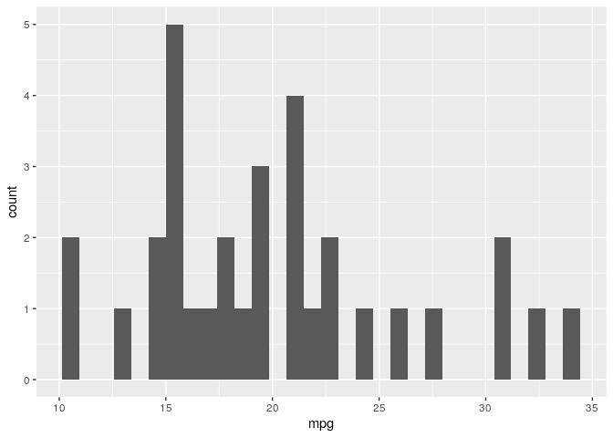

An R package for streamlining the front end of the machine learning workflow.
Summary
Common to the front end of most machine learning pipelines is an exploratory data analysis (EDA) and feature preprocessing. EDA’s facilitate a better understanding of the data being analyzed and allows for a targeted and more robust model development while feature imputation and preprocessing is a requirement for many machine learning alogirthms. nurser aims to streamline the front end of the machine learning pipeline by generating descriptive summary tables and figures, various feature imputation summaries, and automating preprocessing. Automated preprocessing detection has been implemented to minimize time and optimize the processing methods used. The functions in nurser were developed to provide useful and informative metrics that are applicable to a wide array of datasets.
A vignettes for this package can be found here.
nurser was developed as part of DSCI 524 of the MDS program at UBC.
Installation:
You can install the released version of nurser from CRAN with:
The development version can be downloaded from GitHub with:
Features
The package includes the following three functions:
| Function | Input | Output | Description |
|---|---|---|---|
eda |
- a dataframe | - a list that contains histogram and summary statistics for each column | - Functionality for easy explanatory data analysis. |
impute_summary |
- a dataframe | - a list with summary statistics and outputs of different imputation methods | - Functionality for consolidating several imputation methods |
preproc |
- a tibble or dataframe | - a tibble with preprocessed features | - Functionality for automatic feature preprocessing detection and user defined feature preprocessing |
R Ecosystem
nurser was developed to align with:
The impute_summary function leveraged the imputation methods found in the following packages:
However, the functions herein streamline and automate the front-end machine learning pipeline for use with any machine learning package.
eda
The eda() function return a list that contains histogram and summary statistics for a given column. Let’s see it in action!
To view a histogram of a feature:

Now let’s see the summary statistics of this feature:
stats_mpg = result$stats$mpg
stats_mpg
#> Min. 1st Qu. Median Mean 3rd Qu. Max.
#> 10.40 15.43 19.20 20.09 22.80 33.90
impute_summary
Let’s import some continuous data to work with,
and add some missing values,
iris_missing <-
as.data.frame(lapply(iris_data,
function(x) x[sample(c(TRUE, NA),
size = length(x),
replace = TRUE,
prob = c(0.75, 0.25))]))Now, let’s take a look at the data to in fact see if the missing values were generated and where they are:
iris_missing %>% head(10)
#> Sepal.Length Sepal.Width Petal.Length Petal.Width
#> 1 5.1 3.5 1.4 0.2
#> 2 NA NA NA 0.2
#> 3 4.7 3.2 1.3 0.2
#> 4 NA 3.1 NA 0.2
#> 5 5.0 3.6 1.4 0.2
#> 6 5.4 3.9 NA NA
#> 7 4.6 3.4 1.4 0.3
#> 8 5.0 3.4 NA 0.2
#> 9 4.4 2.9 1.4 0.2
#> 10 NA 3.1 1.5 0.1Great, we have some missing values to compute - let’s call impute_summary to get some summary statistics and outputs from different methods.
impute_summary() provides some useful summary statistics and also several imputed dataframes that can be accessed by the impute_summary object attributes. The imputed data frames provided include:
- mean,
- median,
- max,
- min,
- random,
- multiple imputation,
- pmm, and
- random forest
Let’s first take a look at the summaries, which can be accessed using $nan_counts (NA counts for each feature) and $nan_rowindex (rows that contain NA values):
iris_imputed$nan_counts
#> NaN_count
#> Sepal.Length 41
#> Sepal.Width 32
#> Petal.Length 31
#> Petal.Width 38
#> Total 142
iris_imputed$nan_rowindex %>% head(5)
#> NaN_Rows
#> 1 2
#> 2 4
#> 3 6
#> 4 8
#> 5 10Now, let’s take a look at two of the imputed data frames, mean and multiple imputation:
iris_imputed$hmisc_mean %>% head(10)
#> Sepal.Length Sepal.Width Petal.Length Petal.Width
#> 1 5.100000 3.500000 1.400000 0.200000
#> 2 5.851376 3.090678 3.796639 0.200000
#> 3 4.700000 3.200000 1.300000 0.200000
#> 4 5.851376 3.100000 3.796639 0.200000
#> 5 5.000000 3.600000 1.400000 0.200000
#> 6 5.400000 3.900000 3.796639 1.220536
#> 7 4.600000 3.400000 1.400000 0.300000
#> 8 5.000000 3.400000 3.796639 0.200000
#> 9 4.400000 2.900000 1.400000 0.200000
#> 10 5.851376 3.100000 1.500000 0.100000
iris_imputed$mi_multimp %>% head(10)
#> Sepal.Length Sepal.Width Petal.Length Petal.Width
#> 1 5.100000 3.500000 1.400000 0.20000000
#> 2 4.339885 2.905541 1.909153 0.20000000
#> 3 4.700000 3.200000 1.300000 0.20000000
#> 4 4.673642 3.100000 1.376124 0.20000000
#> 5 5.000000 3.600000 1.400000 0.20000000
#> 6 5.400000 3.900000 1.346952 -0.04829088
#> 7 4.600000 3.400000 1.400000 0.30000000
#> 8 5.000000 3.400000 1.986463 0.20000000
#> 9 4.400000 2.900000 1.400000 0.20000000
#> 10 4.588924 3.100000 1.500000 0.10000000
preproc
The preproc() function returns a tibble with preprocessed features. Simply call preproc on your data!
Let’s first view our data before preprocessing:
head(iris)
#> Sepal.Length Sepal.Width Petal.Length Petal.Width Species
#> 1 5.1 3.5 1.4 0.2 setosa
#> 2 4.9 3.0 1.4 0.2 setosa
#> 3 4.7 3.2 1.3 0.2 setosa
#> 4 4.6 3.1 1.5 0.2 setosa
#> 5 5.0 3.6 1.4 0.2 setosa
#> 6 5.4 3.9 1.7 0.4 setosaand now after calling preproc:
results = preproc(iris)
head(results)
#> Sepal.Length Sepal.Width Petal.Length Petal.Width Species_versicolor
#> 1 -0.8976739 1.01560199 -1.335752 -1.311052 0
#> 2 -1.1392005 -0.13153881 -1.335752 -1.311052 0
#> 3 -1.3807271 0.32731751 -1.392399 -1.311052 0
#> 4 -1.5014904 0.09788935 -1.279104 -1.311052 0
#> 5 -1.0184372 1.24503015 -1.335752 -1.311052 0
#> 6 -0.5353840 1.93331463 -1.165809 -1.048667 0
#> Species_virginica
#> 1 0
#> 2 0
#> 3 0
#> 4 0
#> 5 0
#> 6 0